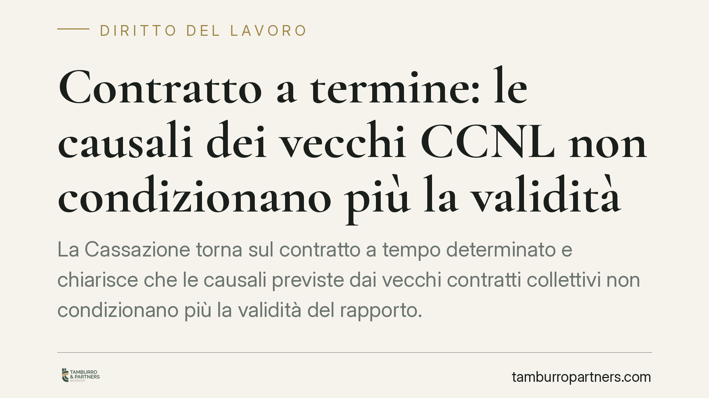

Contratto a termine: le causali dei vecchi CCNL non condizionano più la validità
La Cassazione torna sul contratto a tempo determinato e chiarisce che le causali previste dai vecchi contratti collettivi non condizionano più la validità del rapporto. Dopo la riforma del 2015 il legislatore ha spostato il baricentro dalla giustificazione qualitativa ai limiti di durata e ai tetti numerici. Un cambio di prospettiva che ridisegna i margini di contestazione per imprese e dipendenti.

Il caso
La Suprema Corte è intervenuta su una questione ricorrente nel contenzioso lavoristico: la sopravvivenza delle causali di apposizione del termine contenute in contratti collettivi anteriori alla riforma del 2015. Molti CCNL, redatti sotto la vigenza della vecchia disciplina, subordinavano il ricorso al contratto a termine a specifiche esigenze tecniche, organizzative o produttive. La domanda era se quelle clausole continuassero a operare come condizione di validità.
La risposta della Cassazione è negativa. Le clausole causali dei CCNL antecedenti non costituiscono più requisito di legittimità del contratto a termine, perché il quadro legale che le sorreggeva è stato integralmente riscritto.
*(Gli estremi esatti della pronuncia — numero e anno — vanno verificati sulla fonte ufficiale prima della pubblicazione.)*
Inquadramento normativo
Il riferimento è l'art. 19 del Decreto Legislativo n. 81 del 2015, che ha superato il precedente modello imperniato sulla causale (la ragione tecnica, organizzativa o sostitutiva che giustificava il termine). Con il d.lgs. 81/2015 il legislatore ha introdotto un sistema "acausale" entro la soglia dei 12 mesi: fino a tale durata il contratto a termine è ammesso senza necessità di indicare una specifica ragione giustificatrice.
L'obbligo di causale riemerge oltre i 12 mesi — e nei casi di rinnovo — per effetto delle modifiche introdotte dal Decreto Dignità (D.L. n. 87 del 2018, convertito in Legge n. 96 del 2018). In quel caso la giustificazione deve rientrare nelle ipotesi tipizzate dalla legge, non più in quelle liberamente definite dalla contrattazione collettiva.
Perché le clausole CCNL sono considerate superate
Il punto interpretativo più rilevante riguarda il rapporto tra fonte legale e contrattazione collettiva. Le causali dei vecchi CCNL erano lo strumento con cui la contrattazione riempiva di contenuto un regime che la legge affidava, in parte, all'autonomia collettiva. Quel regime non esiste più.
Riscrivendo integralmente la disciplina, la fonte legale ha assorbito la funzione che prima spettava al CCNL. La causale non è più "condizione di validità" perché la validità del termine dipende oggi da parametri quantitativi — durata complessiva e limiti percentuali di organico — e non da una giustificazione qualitativa ereditata da accordi datati.
Ne deriva che le clausole causali di CCNL anteriori al 2015 non possono essere invocate per far dichiarare nullo un contratto che rispetta i limiti legali vigenti. Non si tratta però di una liberalizzazione: l'attenzione si sposta, non si annulla.
Implicazioni pratiche
La lettura va condotta in modo speculare.
Per l'azienda, il rischio di contestazione fondato sull'assenza di una causale prevista da un vecchio CCNL si riduce sensibilmente. Restano invece pienamente rilevanti — e contestabili — il rispetto della durata massima, dei limiti al numero di proroghe e rinnovi, del tetto percentuale sull'organico e dell'eventuale obbligo di causale legale oltre i 12 mesi.
Per il lavoratore, la strategia difensiva non può più poggiare sulla clausola collettiva superata. Il terreno di verifica diventa il rispetto dei parametri sostanziali: sforamento dei limiti di durata, abuso di proroghe, superamento dei contingenti numerici o carenza della causale legale quando dovuta.
In entrambi i casi, l'attenzione si concentra sui presupposti oggettivi previsti dalla legge, non su formule mutuate da un impianto normativo abrogato.
Cosa fare in concreto
- Verifica la durata complessiva del rapporto a termine e la collocazione rispetto alla soglia dei 12 mesi, oltre la quale scatta l'obbligo di causale legale.
- Controlla proroghe e rinnovi rispetto ai limiti numerici e temporali fissati dall'art. 19 d.lgs. 81/2015.
- Accerta il rispetto del tetto percentuale sull'organico a tempo indeterminato previsto dalla legge o dalla contrattazione applicabile.
- Non fondare contestazioni o difese su causali di CCNL anteriori al 2015, prive oggi di efficacia condizionante sulla validità del termine.
- È opportuno rivedere i modelli contrattuali per allinearli al quadro normativo attuale, eliminando riferimenti a causali collettive superate.
Disclaimer
Contributo informativo a cura di Tamburro & Partners Avvocati. Non costituisce parere legale.
Ogni storia di lavoro ha i suoi tempi.
Se gestisci HR e vuoi un confronto su contenzioso, ispezioni o licenziamenti, scrivi allo studio. Ti rispondiamo entro un giorno lavorativo.